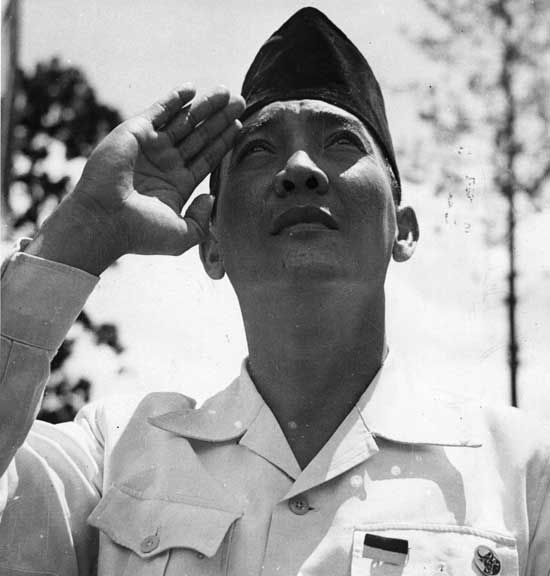

Ir. Soekarno
Bapak Proklamator Indonesia

Ir. Soekarno sedang hormat kepada bendera merah putih.
Perjalanan Hidup Ir. Soekarno
- 1901 - Lahir di Surabaya, Jawa Timur.
- 1911 - Ir. Soekarno sekolah di Europeesche Lagere School (ELS).
- 1915 - Ir. soekarno menyelesaikan sekolah di Europeesche Lagere School (ELS) dan melanjutkan sekolah di Hogere Burger School (HBS).
- 1921 - Ir. Soekarno melanjutkan sekolah di Technische Hoogeschool te Bandoeng (sekarang ITB) di Bandung dengan mengambil jurusan teknik sipil.
- 1926 - Ir. soekarno dinyatakan lulus ujian insinyur dan diwisuda bersama delapan belas insinyur lainnya
- 1926 - Mendirikan algemeene Studie Club (ASC) hasil inspirasi dari Indonesische Studie Club oleh Dr. Soetomo.
- 1929 - Ditangkap oleh pemerintah belanda dan dijebloskan ke dalam Penjara Banceuy di Bandung.
- 1930 - Membacakan pleido yang fenomenal yang berjudul Indonesia Menggugat.
- 1933 - Ir. Soekarno ditangkap kembali oleh Belanda dan diasingkan ke Flores.
- 1943 - Kaisar Jepang memberikan Bintang Kekaisaran kepada Ir. Soekarno dan dua tokoh lainnya.
- 1945 - Memproklamasikan kemerdekaan Indonesia dan diangkat menjadi Presiden didampingi Mohammad Hatta sebagai Wakil President.
- 1966 - Ir. Soekarno mengeluarkan Surat Perintah sebelas Maret (SUPERSEMAR).
- 1967 - Ir. Soekarno menandatangani Surat Pernyataan Penyerahan Kekuasaan di Istana Merdeka sehingga menjadikan Soeharto sebagai kepala pemerintahan Indonesia.
- 1970 - Ir. Soekarno meninggal dunia.